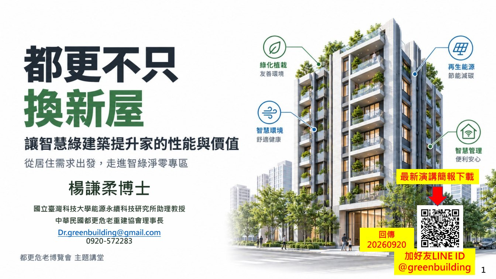
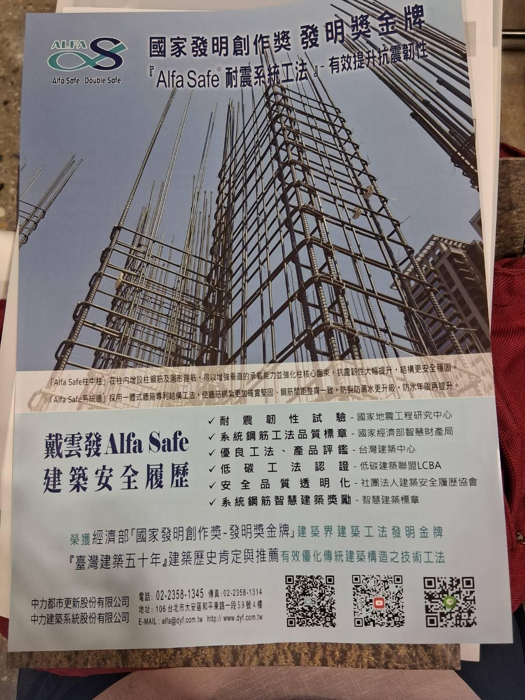

通風、採光與室內品質
檢視自然通風、採光、隔音、濕氣與空氣品質，避免新房子只新在外觀。

Discussion View
更新後的價值不只看權狀坪數。真正影響每天生活與長期成本的，是室內舒適、公設維護、能源使用、設備耐久與管理方式。
檢視自然通風、採光、隔音、濕氣與空氣品質，避免新房子只新在外觀。
外殼隔熱、窗戶性能、照明、空調、公共用電與再生能源都會影響長期成本。
智慧管理可拆成門禁、安全、能源監測、設備維護與異常通知，而不是只保留行銷詞。
設備越多，後續保養與管理費也越重要，整理時可同時列出維護責任、保固與費用估算。
Audio Notes
演講中把智慧建築、綠建築、低碳建築與建築能效放在同一個專業背景下談。網站可以把這些名詞拆開，避免只剩「新案會很智慧、很綠」的籠統說法。
綠建築可整理成生態、節能、減廢、健康四大方向，對應到基地保水、綠化、日常節能、室內環境、水資源與廢棄物等指標。
智慧建築的重點可放在資通訊、系統整合、安全防災、能源管理與營運維護，讓設備變成可管理、可追蹤、可維修的系統。
建築能效、低碳與近零碳資料可補充能源使用、設備效率、外殼隔熱與全生命週期維護成本，讓「長期價值」有可對照的資料。
Field Notes
智綠建築這一題，專家提醒的重點不是把名詞寫得更漂亮，而是讓住戶看得懂更新後的房子到底好在哪裡、貴在哪裡、未來誰維護。
智慧綠建築的重點在於居住性能，包含通風、隔熱、採光、節能、設備管理、安全與長期維護成本。這些都應轉成圖說、規格、驗收與維護責任。
更新後公設比、設備空間、車位配置與管道間都會影響權狀面積。住戶應同時看室內可用空間、公共設施品質與未來維護費。
如果提案主張綠建築或智慧建築，應要求列出可驗證的設計目標、設備清單、維護責任與後續費用，而不是只寫標章或形容詞。
| 現場知識點 | 要避免的誤解 | 住戶可要求的具體資料 | 與自主都更契約的連結 |
|---|---|---|---|
| 重建不是只換新屋 | 以為建物變新、外觀漂亮，就等於居住品質一定改善。 | 通風、採光、隔熱、隔音、防潮、空氣品質、公共用電、管理費試算。 | 把性能目標寫進規格附件，並約定驗收方式與保固責任。 |
| 權狀增加不等於室內變大 | 只看權狀坪數增加，忽略公設比、車位、管道間與設備空間。 | 室內實際可用面積、平面圖、公設項目、公設比、車位型式與產權說明。 | 分配比較表應同時列權狀面積、室內面積、公設品質與維護成本。 |
| 設備規格要可檢核 | 把「智慧」「節能」「綠建築」當成廣告語，沒有具體設備與維護條件。 | 設備品牌等級、效能標示、系統架構、維護合約、保固年限、汰換費用。 | 重要設備應列入合約附件；若變更規格，須有等級不低於原規格的替代條件。 |
| 維護成本也是分配條件 | 只比較交屋時的價值，忽略十年後的維修、保養、授權與管理費。 | 公共設備年度維護費、耗材週期、系統授權費、管理人力與保固到期後成本。 | 提案比較表應納入交屋後 5 年與 10 年的維護費估算。 |
| 標章不是最後答案 | 以為取得標章就代表所有居住問題都已解決。 | 標章項目對照表、評估等級、設計採用項目、未採用項目與原因。 | 標章承諾應對應到住戶能檢查的圖說、材料、設備與驗收文件。 |
Energy Notes
逐字稿可辨識段落提到節能評定、再生能源、屋頂與陽台空間、設備設施不只是增加成本，也可能透過省電與能源管理回收效益。現場筆記也提醒：若智慧建築沒有善用能源，公共電費可能高於家庭用電，住戶應把公共用電納入提案比較。
逐字稿提到地下室抽風、電梯、外殼隔熱等設計，並連到節能評定。住戶不應只看是否宣稱綠建築，而要看哪些設計真的降低耗能。
錄音脈絡提到設備設施不一定只是增加成本，也可能透過省電把錢回收。頁面應提醒住戶要求能源試算，而不是只接受設備清單。
逐字稿提到用電與再生能源導入。智慧建築若有太陽能、能源監測或儲能規劃，應說明供應哪些公設、尖峰時段如何調度、誰維護。
| 能源檢核 | 如果沒說清楚的風險 | 住戶可要求 |
|---|---|---|
| 公共用電 | 電梯、抽排風、空調、照明、門禁、充電與智慧系統可能讓公電負擔上升。 | 公共用電試算、尖峰用電估算、設備耗能表與管理費影響。 |
| 再生能源 | 太陽能或儲能若只寫概念，未必真的抵減公共用電。 | 設置容量、供電用途、預估發電量、維護費、躉售或自用規劃。 |
| 設備管理 | 設備越智慧，後續授權、維修、資料與廠商綁定風險越高。 | 維護合約、保固年限、授權費、資料歸屬、汰換成本。 |
| 節能承諾 | 只寫節能或綠建築標章，住戶仍無法知道電費會不會下降。 | 能源模擬、節能率、驗收方式、交屋後一年實測追蹤。 |
Slides × Transcript
智綠建築頁應把投影片中的標章、性能、設備與維護成本說清楚。錄音中多次把智慧建築、綠建築、低碳、建築能效與人居價值放在一起，適合轉成規格化的閱讀方式。
Spec Checklist
| 面向 | 可要求提案列明 | 可延伸討論 |
|---|---|---|
| 室內環境 | 採光、通風、隔熱、隔音、防潮、空氣品質設計。 | 是否能從圖說、材料與設備規格看出具體做法？ |
| 能源與用水 | 公共用電、節水設備、雨水或中水、太陽能、能源監測。 | 節能承諾如何驗證？維護費是否已估算？ |
| 智慧管理 | 門禁、監控、包裹、電梯、停車、設備異常通知與管理平台。 | 系統由誰維護？資料歸誰？後續授權費或維修費多少？ |
| 長期價值 | 建材耐久、保固、維修可及性、公設配置、管理費試算。 | 未來十年的維護成本是否被納入分配與管理討論？ |
Performance Map
這一頁可以比原本更完整：不要只列名詞，而是把每個名詞轉成「規格、驗收、維護、費用」四個面向。
| 主題 | 可寫進規格的項目 | 可驗收或追蹤的證據 | 後續維護問題 |
|---|---|---|---|
| 室內健康 | 採光、通風、隔音、濕氣控制、低逸散建材、空氣品質。 | 圖說、材料表、通風換氣設計、完工檢測或保固文件。 | 濾網、換氣設備、除濕與空調系統誰維護？費用如何估？ |
| 能源效率 | 外殼隔熱、窗戶性能、照明、空調、公共用電、能源監測。 | 設備效率標示、能源模擬、建築能效標示或監測數據。 | 節能設備壽命、汰換成本、公共用電分攤與管理責任。 |
| 水資源與基地 | 節水器具、雨水回收、基地保水、植栽與排水設計。 | 設備清單、管線圖、雨水回收容量、景觀與保水設計圖。 | 水箱、泵浦、植栽、排水設施與防蚊維護。 |
| 智慧管理 | 門禁、監控、電梯、停車、包裹、能源管理與異常通知。 | 系統架構圖、資安設定、維護合約、資料權限與備援機制。 | 授權費、維修費、資料保存、系統汰換與廠商綁定風險。 |
| 低碳與耐久 | 低碳材料、耐久建材、維修可及性、模組化與施工減廢。 | 材料證明、低碳標示、施工廢棄物管理、保固年限。 | 未來十年維修成本與材料取得是否容易。 |
Safety Method
補充照片不是簡報頁，而是現場取得的建築安全工法資料。它可放在智綠建築頁中提醒住戶：重建品質除了節能與智慧設備，也包含耐震、施工品質、低碳工法與安全履歷。

現場資料標示「國家發明創作獎 發明獎金牌」，主軸為有效提升抗震韌性，並強調系統鋼筋工法與建築安全履歷。
工法說明：「Alfa Safe 柱中柱」在柱內增設柱鋼筋及圓形箍筋，得以增強垂直承載能力並強化柱核心圍束，提升抗震韌性。
系統特色：採用一體式牆插鼻勾結構工法，使牆筋綁紮更加確實堅固，鋼筋間距整齊一致，並提升防裂、防漏水、防水年限。
| 資料列示項目 | 照片文字 | 住戶應如何使用 |
|---|---|---|
| 耐震韌性試驗 | 國家地震工程研究中心。 | 要求提案說明耐震設計、試驗資料、結構系統與第三方檢測依據。 |
| 系統鋼筋工法品質標章 | 經濟部智慧財產局。 | 確認工法是否有專利、標章或可查證文件，避免只聽口頭說法。 |
| 優良工法、產品評鑑 | 台灣建築中心。 | 將評鑑資料放入提案附件，並要求說明適用範圍與限制。 |
| 低碳工法認證 | 低碳建築聯盟 LCBA。 | 若主張低碳，應列出材料、工法、碳排或節能效益的可驗證資料。 |
| 安全品質透明化 | 社團法人建築安全履歷協會。 | 可納入施工履歷、查驗紀錄、照片、材料證明與完工交付資料。 |
| 系統鋼筋智慧建築獎勵 | 智慧建築標章。 | 把安全工法與智慧管理、維護資料連動，而不是把智慧建築只理解成設備。 |
智綠建築適合回到契約與規格整理。如果自主都更要建立可比較的討論基礎，就不能只保留「會做綠建築、智慧建築」的口頭說法，而要把性能、設備、保固、維護費與驗收方式放進提案比較表。
Reference Links